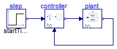

Closed loop control without direct feedthrough but steady state initialization. This leads to a linear system of equations over FMUs during initialization and to an artificial loop during simulation
Extends from Modelica.Icons.ExamplesPackage (Icon for packages containing runnable examples).
| Name | Description |
|---|---|
| Reference | Reference solution in pure Modelica |
| WithFMUsReference | Reference solution in pure Modelica using exactly the same structuring as in Model WithFMUs |
| WithFMUs | Solution with FMUs |
| For all models in this package an FMU must be generated |
 FMITest.Initialization.LinearSystems.ClosedLoopControl1.Reference
FMITest.Initialization.LinearSystems.ClosedLoopControl1.Reference
Reference solution in pure Modelica

Extends from Modelica.Icons.Example (Icon for runnable examples).
FMITest.Initialization.LinearSystems.ClosedLoopControl1.WithFMUsReference
Reference solution in pure Modelica using exactly the same structuring as in Model WithFMUs

Extends from Modelica.Icons.Example (Icon for runnable examples).
FMITest.Initialization.LinearSystems.ClosedLoopControl1.WithFMUs
Solution with FMUs
Extends from Modelica.Icons.Example (Icon for runnable examples).